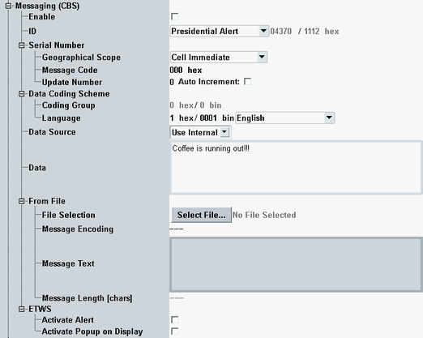

This section describes the cell broadcast service (CBS) settings.
- Commercial mobile alert system (CMAS) messages:
Message types: presidential alert, extreme alert, severe alert and amber alert
CMAS messages are transmitted via SIB 12.
The term CMAS is used in 3GPP specifications. Other resources also use the newer name wireless emergency alerts (WEA). - Earthquake and tsunami warning system (ETWS) messages:
Message types: earthquake, tsunami, earthquake + tsunami
ETWS messages are transmitted via SIB 10 and SIB 11.
Option R&S CMW-KS170 is required.

Enables the transmission of cell broadcast messages via system information messages.
Cell broadcast messages are transmitted if this checkbox is switched on and the cell is switched on.
Remote command:Select a message type. The resulting message ID is displayed for information as decimal and hexadecimal value.
The mapping between message type and message ID is defined in 3GPP TS 23.041, section 9.4.1.2.2.
For "User Defined...", you can enter a message ID.
Remote command:Sets the serial number, see 3GPP TS 23.041, section 9.4.1.2.1.
- Geographical scope: message code validity area
- Message code: 10-bit number
- Update number: version of the message
Enable "Auto Increment" to increase the number automatically when you change the message.
Specifies the coding group and language of the message, see 3GPP TS 23.038, section 5.
- "Use Internal": "Coding Group" = 0, "Language" configurable
You can select a language or enter its hexadecimal or binary code. - "From File": "Coding Group" = 1, "Language" = 1 (UCS2)
Selects the source of the message text.
"Use Internal" | Configure the message via the parameter "Data". |
"From File" | Configure the message via the section "From File". |
Defines the contents of a message for the data source "Use Internal".
Remote command:Selects a file containing the message to be transmitted. The file is used if the configured data source equals "From File".
Selects a file from the system drive folder D:\Rohde-Schwarz\CMW\Data\cbs\LTE\ or one of its subfolders. Store your message files there, using the file extension .cbs.
The current software version supports only 16-bit Unicode (UTF16).
Remote command:Displays information about the message in the selected file.
Remote command:Configures additional settings for the ETWS message types.
- "Activate Alert": The UE must activate an emergency user alert.
- "Activate Popup on Display": The UE must display a warning popup.
The related messages are defined in 3GPP TS 23.041, section 9.3.24.
Remote command: